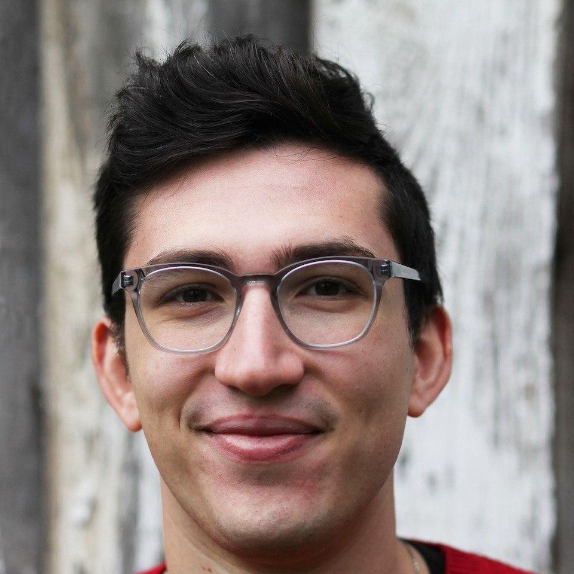
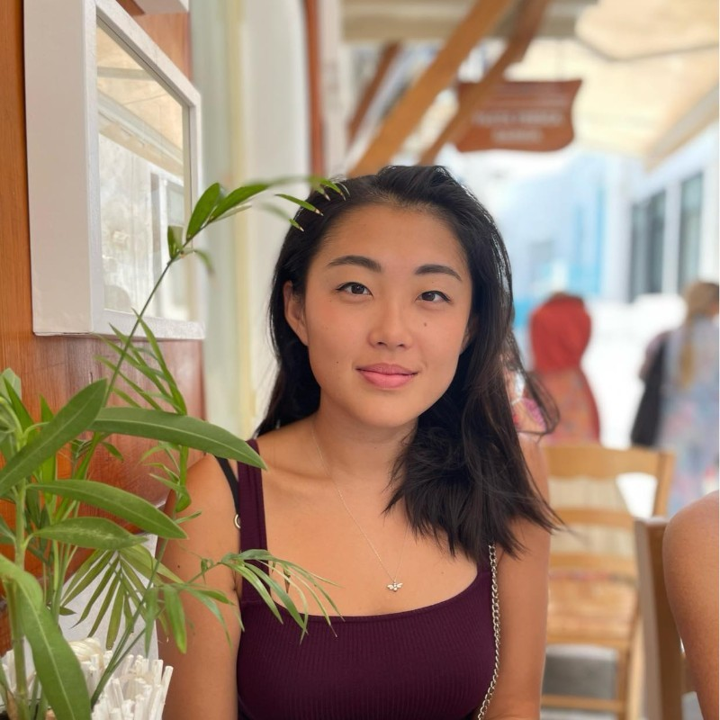

Experienced mentorship for the applications, projects, & programs that matter most.
A new model of admissions consulting based on strong mentor relationships, expert strategy guidance, and impactful projects — all in one place.
Learn more →We have helped hundreds of applicants receive fully funded offers from PhD and MA/MS programs. We also work with researchers at every stage of their career to promote their work & publish in top journals.
Learn more →We design and run interdisciplinary, project-based programs at institutions like Phillips Academy Andover, Stanford University, and King Saud University. We also help schools update curricula and implement educational goals.
Learn more →Specialties: University of California, UK Universities, T-20 Colleges, Research (Computer Science, Social Sciences, and Humanities), Passion Projects, Speech & Debate
As a first generation college student, Henry received scholarships to study at UC Berkeley and the University of Oxford before going on to lead academic programs at Phillips Academy Andover, Stanford, and more than a dozen high schools. Drawing on his experience building everything from a publishing company to government educational platforms, he uses long term projects to connect with students, who have gone on to become Rhodes Scholars, national champions in debate, and tenured researchers. Henry serves as the lead mentor for each family, connecting them to his network of graduate students, researchers, and former admissions officers.

Specialties: Ivy League, Engineering, Biology, Rhodes Scholarship
Henry Cerbone is currently pursuing a PhD in Biology at the University of Oxford as a Rhodes Scholar. He received his undergraduate degree in robotics, philosophy, and biology and his master’s degree in computer science from Harvard University. He has conducted scientific research at Harvard, EPFL, OIST, and Oxford, and completed projects for NASA, Draper, and AMD. Henry has guided numerous students through successful applications to Harvard and publishing original research in engineering and biology.
Specialties: Ivy League, University of Chicago, Humanities, Creative Writing
After completing degrees at the University of Chicago and the University of Oxford, where he was a fully-funded Clarendon Scholar, Daniel Ortiz is now a visiting PhD researcher at Yale University. He is an expert writing instructor who focuses on helping his students craft original and compelling essays. Daniel previously worked at Crimson Consultants, where he built an extensive record of Ivy League placements.

Specialties: AI, Game Development, Competition and Admissions Test Math, Statistics, Computer Science
After testing into Westminster School, Luxi received a bachelor’s and master’s in Mathematics from Imperial College London. She now works as a Senior Developer at Roblox after spending three years at Amazon. Outside of work, she has written some of the top-ranked novels on the fiction platform Wattpad and developed mobile and VR games including titles ranked #2 in the Apple App Store. Luxi works with students to build original and creative applications of contemporary AI research such as games, web apps, mobile apps, and wearables.
Specialties: Linguistics, Education, Social Sciences
After growing up in Beijing and completing her undergraduate degrees in English and Finance at Beijing Foreign Studies University, Phoebe Wang studied at UC Berkeley and the University of Pennsylvania before beginning her PhD at UCLA. Her doctoral research explores Mandarin-English bilingual children’s language interaction, offering her a unique insight into international and multicultural education. She has guided many Chinese students applying to top programs internationally for both undergraduate and graduate degrees.